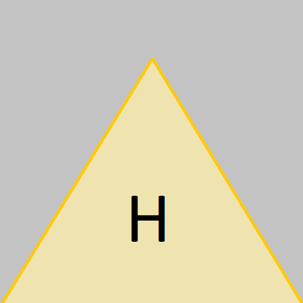

Лабораторная работа №8
Вариант = (22 mod 18) + 1 = 5
Задание
-
Добавить на одну страницу карту изображений с несколькими ссылками, используя теги
<map>и<area>. - Добавить на одну из страниц карту изображений, содержащую области показанные в задании в п.3.1.
- Реализовать дубликат карты изображения (из п.1) с применением CSS и без применения тегов
<map>. - Разработать и включить на одну из созданных ранее страниц gif-анимацию.
- Включить на странице звуковой файл.
- Включить на страницк видеоролик.
Пункты 1-2

Нажмите на треугольник, чтобы перейти к домашней странице
Пункт 3
Аналог пункта 1, но исользует только CSS
Пункт 4

Аттрактор Лоренца, gif-анимация
Пункт 5
Пример аудио из Interactive Examples MDN Mozilla:
t-rex-roar.mp3
Пункт 6
Пример видео